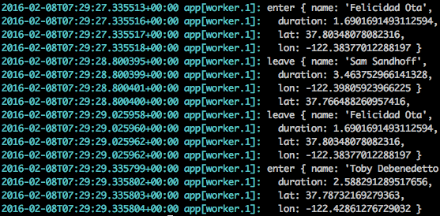

Team Learning
Objective
Develop a functional prototype of the app your team designed during the Hackathon
Due
Friday @ 11:59pm, 2/12/2016
Requirements
App
- [ ] The client page (/apps/uber/client/) should look as close to the mockup as possible.
- [ ] The admin page (/apps/uber/admin/) should look as close to the mockup as possible.
- [ ] The ProviderMap component should be implemented.
- [ ] The ProviderList component should be implemented.
- [ ] The UserMap component should be implemented.
- [ ] The UserList component should be implemented.
Worker
- [ ] The script for simulating providers should be implemented (i.e.,
workers/uber/simulate-providers.js). Each provider should move around, rather than staying at the same location. - [ ] The worker should be deployed to Heroku.
Heroku Hints
Initial Push
Here’s a brief walkthrough of how you can push a script to Heroku to run as a background worker. This week and next week, you will be practicing pushing and running worker scripts on Heroku.
Our goal here to push the code under workers/uber as an app to Heroku.
Assume you are at the root of your book repo.
Install NPM dependencies
$ npm install
To execute the worker locally, run
$ node workers/uber/simulate-providers.js
You should see

To deploy the worker script to Heroku, first, create a Heroku app. The easiest
would be to do it through Heroku’s online GUI. Remember the name you chose for
your app, because you will need it for setting a heroku git remote.
Here, the example Heroku app’s name is ucdd2-workers-uber.
Next, create a heroku git remote to refer to this app. Here, we choose
heroku-uber as the name of this remote. You will need to install
heroku toolbelt.
$ heroku git:remote -r heroku-uber -a ucdd2-workers-uber
Finally, push the code, NOT all the code, only the code inside
workers/uber to Heroku. To do so, commit the changes to the worker script
$ git commit -a -m 'some commit message'
Then use git’s subtree command.
$ git subtree push --prefix workers/uber heroku-uber master
Run one worker (no web server)
$ heroku ps:scale web=0 worker=1
To check if your worker is running correctly, read the logs
$ heroku logs
You should see something like:

This should look similar to the output of running locally.
Subsequent Pushes
Each time you made changes to the script (i.e., workers/uber/simulate-providers.js).
You can commit the changes
$ git commit -a -m 'another commit message'
Then run the subtree command to deploy to Heroku again
$ git subtree push --prefix workers/uber heroku-uber master